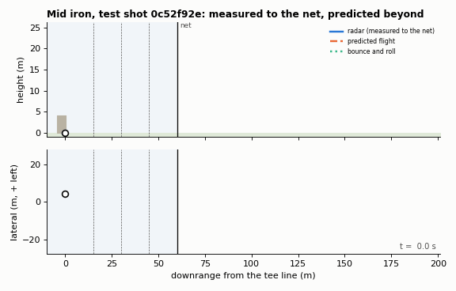

Predicting a golf ball's flight from its first 60 metres
On a netted urban driving range the radar only sees the start of each shot. These animations show the rest of the flight reconstructed from that opening portion alone: the ball's launch, four radar crossings at 15, 30, 45 and 60 m, and nothing else. A physics simulator is inverted to recover each shot's spin, spin-axis tilt and launch speed, gradient boosting corrects what the physics misses, and the drawn path is stitched so that it passes exactly through the measured crossings and the predicted apex and landing. Bounce and roll follow a published model of a ball's run on turf. Built for the Inrange student competition, on 491 tracked shots from a range near Stellenbosch.

Interactive shots
- measured to the net
- predicted flight
- bounce and roll
Each page is a 3D scene you can rotate, play and scrub, with camera presets for behind the golfer, side-on and top-down. The five shots below are from the held-out test set, so no target for them was ever seen.
-
Wedge
Ball speed 39.8 m/s, predicted spin 10 360 rpm. Carry 93 m, and it stops almost dead: 0.3 m of run.
-
Mid iron
Ball speed 57.5 m/s, predicted spin 5 570 rpm. Carry 170 m, then 21 m of bounce and roll.
-
Driver
Ball speed 72.0 m/s, predicted spin 2 350 rpm. Carry 232 m and 256 m in total.
-
Strong curve
Ball speed 76.1 m/s, predicted spin 3 200 rpm. Carry 255 m, finishing about 80 m left of the target line.
-
Upper-tier bay
Ball speed 63.6 m/s, predicted spin 5 200 rpm. Struck from a balcony 4.1 m up, so it keeps falling after level landing: 189 m carry, 217 m in total.
-
Training shot, with the truth
A shot whose real apex and landing are known. The button at the top right shows them beside the prediction.
How it works
Every shot's spin, spin-axis tilt and launch speed factor are fitted to its four radar crossings by a golf ball flight simulator (drag, Magnus lift and spin decay), whose aerodynamic coefficients are fitted to the training shots. Those states and the resulting simulated flight feed a gradient boosting model, which predicts the difference between the simulation and the truth for landing, apex and their times. Against a pure machine learning baseline, the combination cuts landing error from 6.5 m to 5.0 m, cross-validated on held-out sessions and shots.
The code, a full writeup of the analysis and every cross-validation number are in the repository.